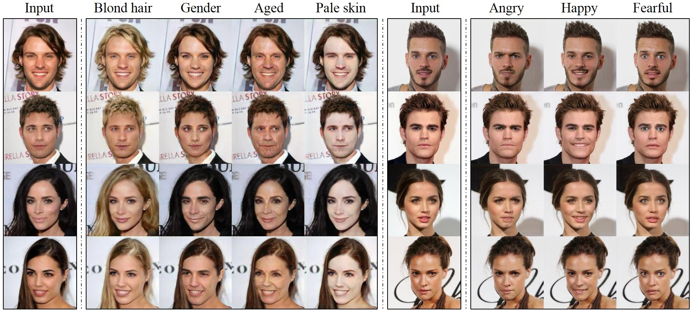

Generative Adversarial Networks (GANs)
Introduction
Generative Adversarial Networks (GANs) introduce by Goodfellow et al in 2014 are a brilliant solution to many very interesting problems in unsupervised machine learning. They have been applied with great results in generation of paintings, clothing, video and imagery in general. They consist of two networks working against each-other in a zero-sum game framework, meaning that the gain of one is the loss of the other.
Implementation

The model consists of a generator and discriminator network. The idea is actually simple, but at the same time extremely powerful and elegant. Let's consider the case of generaing photo-realistic images of faces. We have a large dataset of faces and want to generate new ones. The goal of the discriminator is therefore to recognize if a face was generated from the generator or is actually a real image from the dataset. The two networks work simultaneously and against each-other, the discriminator trains on images from the dataset and from the generator and then tries to distinguish the two, the generator tries to improve its weights and biases until the discriminator cannot distinguish between the fake and real images anymore and starts exhibiting pseudo-random behaviour when making the classification. The result of this is that the discriminator becomes extremely good at classifying true and fake images while the generator becomes extremely good at generating realistic images. Obviously the generator network is what is more interesting to us. This idea can be implemented with deep learning or even deep learning convolutional networks and the results are truly astonishing. Ideas like these are what are pushing forward fields such as machine vision and machine learning. The idea proposed by Goodfellow et al has truly been a driving force in my own research which involves collaborative networks and conformal prediction theory for the detection of concept drift in malware classification which I might discuss at a later point.
It is interesting to see how initally what seems to be random Gaussian noise generated morphs into photo-realistic imagery as shown below. It is imperative to realize the fact that GANs are not able to generate images from thin air but still require input. This is because the generator effectively learns the distribution of the feature vector's elements and does not generate it from a pseudo-random distribution. 